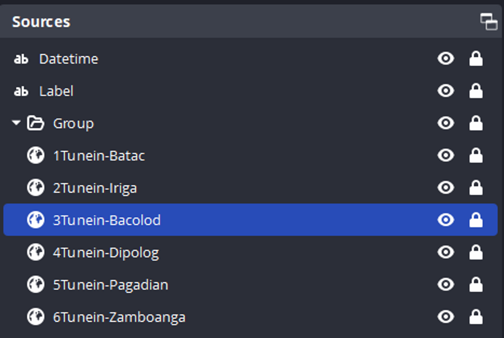
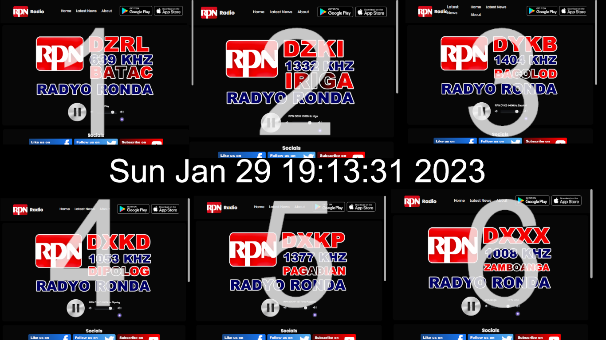
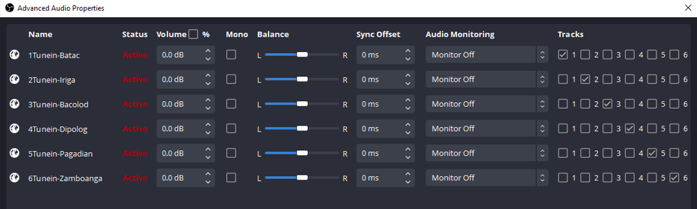
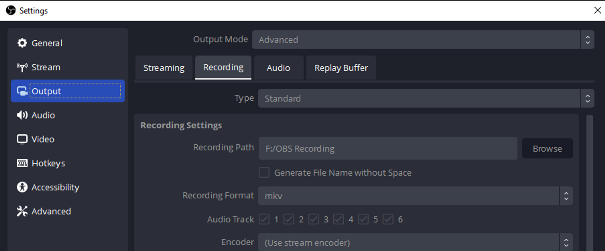
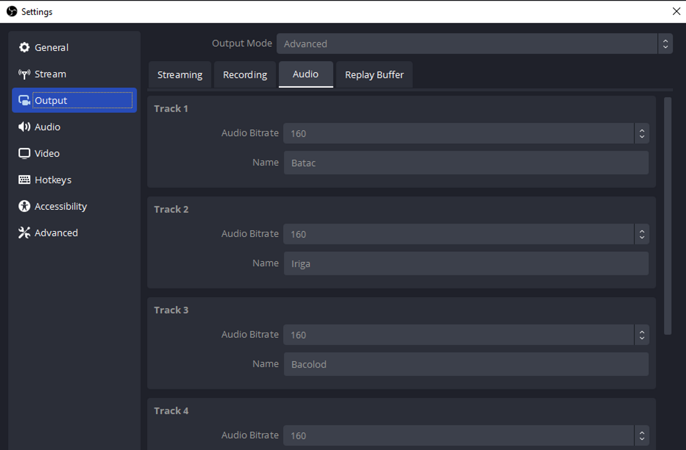
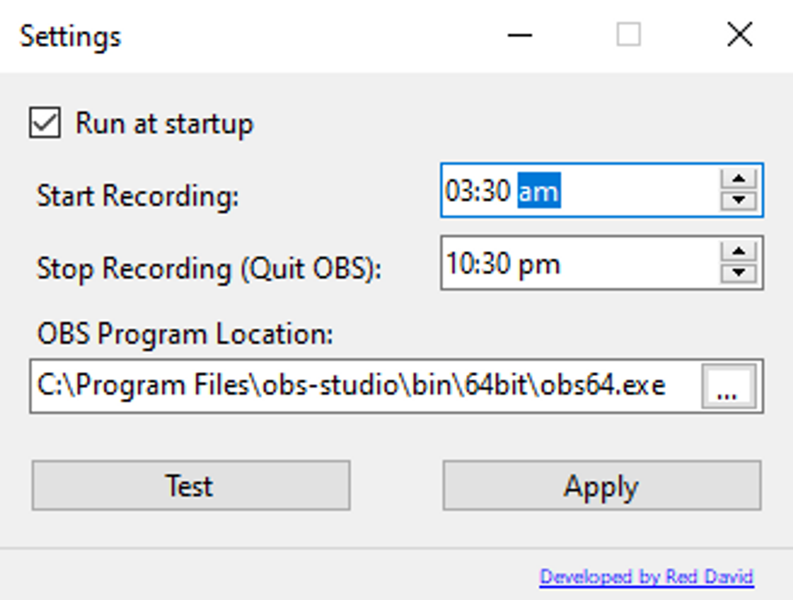
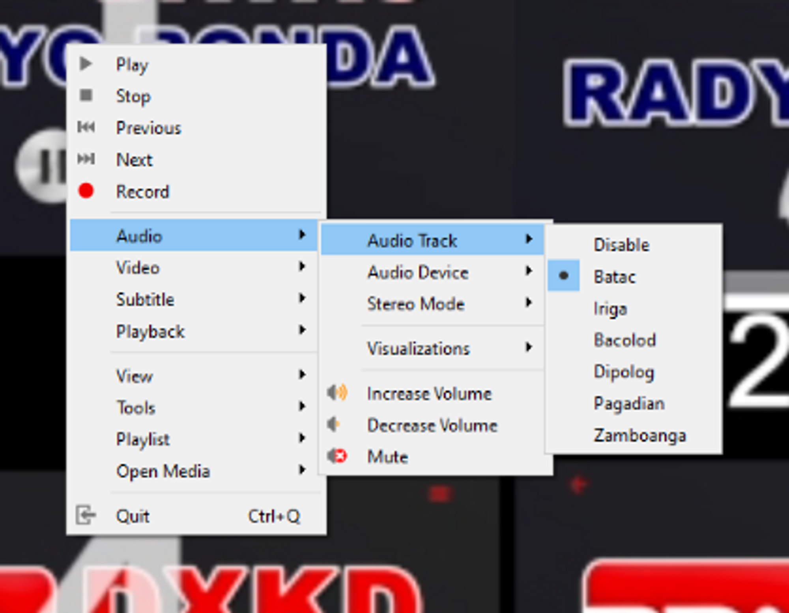

There was a requirement at work (not mine) that requires to record the 12 radio stations’ broadcast traffic to be monitored later for any discrepancies and whatnot.
I was asked if this was possible, and I said yes, there’s a solution for the current setup we have onsite. With the knowledge that OBS can record 6 separate audio tracks at once, I suggested allocating two desktop PCs to record each 6 “online audio streams” - we cater online live streaming, and since the audio service DOES NOT record hence save backups.
OBS Layout
So I began setting up the layout that will help distinguish the date and time of the streams being recorded:
--[[ OBS Studio datetime script
This script transforms a text source into a digital clock. The datetime format
is configurable and uses the same syntax than the Lua os.date() call.
]]obs=obsluasource_name=""datetime_format=""activated=false-- Function to set the time textfunctionset_datetime_text(source,format)localtext=os.date(format)localsettings=obs.obs_data_create()obs.obs_data_set_string(settings,"text",text)obs.obs_source_update(source,settings)obs.obs_data_release(settings)endfunctiontimer_callback()localsource=obs.obs_get_source_by_name(source_name)ifsource~=nilthenset_datetime_text(source,datetime_format)obs.obs_source_release(source)endendfunctionactivate(activating)ifactivated==activatingthenreturnendactivated=activatingifactivatingthenobs.timer_add(timer_callback,1000)elseobs.timer_remove(timer_callback)endend-- Called when a source is activated/deactivatedfunctionactivate_signal(cd,activating)localsource=obs.calldata_source(cd,"source")ifsource~=nilthenlocalname=obs.obs_source_get_name(source)if(name==source_name)thenactivate(activating)endendendfunctionsource_activated(cd)activate_signal(cd,true)endfunctionsource_deactivated(cd)activate_signal(cd,false)endfunctionreset()activate(false)localsource=obs.obs_get_source_by_name(source_name)ifsource~=nilthenlocalactive=obs.obs_source_showing(source)obs.obs_source_release(source)activate(active)endend----------------------------------------------------------functionscript_description()return"Sets a text source to act as a clock when the source is active.\
\
The datetime format can use the following tags:\
\
%a abbreviated weekday name (e.g., Wed)\
%A full weekday name (e.g., Wednesday)\
%b abbreviated month name (e.g., Sep)\
%B full month name (e.g., September)\
%c date and time (e.g., 09/16/98 23:48:10)\
%d day of the month (16) [01-31]\
%H hour, using a 24-hour clock (23) [00-23]\
%I hour, using a 12-hour clock (11) [01-12]\
%M minute (48) [00-59]\
%m month (09) [01-12]\
%p either \"am\" or \"pm\" (pm)\
%S second (10) [00-61]\
%w weekday (3) [0-6 = Sunday-Saturday]\
%x date (e.g., 09/16/98)\
%X time (e.g., 23:48:10)\
%Y full year (1998)\
%y two-digit year (98) [00-99]\
%% the character `%ยด"endfunctionscript_properties()localprops=obs.obs_properties_create()obs.obs_properties_add_text(props,"format","Datetime format",obs.OBS_TEXT_DEFAULT)localp=obs.obs_properties_add_list(props,"source","Text Source",obs.OBS_COMBO_TYPE_EDITABLE,obs.OBS_COMBO_FORMAT_STRING)localsources=obs.obs_enum_sources()ifsources~=nilthenfor_,sourceinipairs(sources)dosource_id=obs.obs_source_get_id(source)ifsource_id=="text_gdiplus"orsource_id=="text_ft2_source"thenlocalname=obs.obs_source_get_name(source)obs.obs_property_list_add_string(p,name,name)endendendobs.source_list_release(sources)returnpropsendfunctionscript_defaults(settings)obs.obs_data_set_default_string(settings,"format","%X")endfunctionscript_update(settings)activate(false)source_name=obs.obs_data_get_string(settings,"source")datetime_format=obs.obs_data_get_string(settings,"format")reset()endfunctionscript_load(settings)localsh=obs.obs_get_signal_handler()obs.signal_handler_connect(sh,"source_show",source_activated)obs.signal_handler_connect(sh,"source_hide",source_deactivated)end
Add 6 Browser sources arranged in a grid and each navigates to a station’s stream URL
Add another Text source for the track number overlay spaced properly to match the browser source grid
Below is the final scenes list and output layout:

OBS Scenes

OBS Scene Output Preview
OBS Recording Settings
After arranging the tracks to determine their order:
Set Advanced Audio Properties to separate audio to each track

OBS Advanced Audio Properties
Check all tracks in Recording settings

Check Box - Recording Advanced Settings
Rename tracks in Audio settings

Naming Audio Tracks in Audio Settings
Finally, I set the settings to record at just 10kbps to decrease the output filesize.
Automation
After setting up the recording system, it is now a challenge on how to run OBS and start recording at the required times: 3:00am to 10:00pm.
Turning off the system at 10:00pm is not a problem but starting it at 3:00am is a challenge. And it is also not an option to run the system 24/7 since we need dailytraffic.
Task Scheduler and PowerShell Script
I first chose this method since I know that most programs use this as well to run at a specific setting (e.g. Startup, definite time). So I get to code two files: an XML for the task to be imported, and a PowerShell script which the task will run:
$obs=Get-Processobs64-ErrorActionSilentlyContinueif($obs){# try gracefully first$obs.CloseMainWindow()# kill after 1 secondSleep 1if(!$obs.HasExited){$obs|Stop-Process-Force}}Remove-VariableobsWrite-Host"$(Get-Date) Launching OBS Studio..."Write-Host"$(Get-Date) Recording..."Set-Location-Path"C:\Program Files\obs-studio\bin\64bit\"Start-Process".\obs64.exe"--startrecordingWrite-Host"Remember to set and start your Output Timer in Tools"Write-Host"or you can just manually stop the recording"#Write-Host "Press any key to continue..."#$Host.UI.RawUI.ReadKey("NoEcho,IncludeKeyDown")Read-Host-Prompt"Press Enter to exit"
<?xml version="1.0" encoding="UTF-16"?><Taskversion="1.4"xmlns="http://schemas.microsoft.com/windows/2004/02/mit/task"><RegistrationInfo><Date>2020-10-29T16:14:25.6856808</Date><Author>DAVID-WORKPC\david</Author><Description>This task runs a powershell script that launches OBS Studio with a parameter to start recording automatically.</Description><URI>\Run OBS Studio and Record</URI></RegistrationInfo><Triggers><CalendarTrigger><StartBoundary>2020-10-29T02:59:59+08:00</StartBoundary><Enabled>true</Enabled><ScheduleByDay><DaysInterval>1</DaysInterval></ScheduleByDay></CalendarTrigger></Triggers><Principals><Principalid="Author"><UserId>S-1-5-21-2031556638-4226476305-1743380608-1001</UserId><LogonType>InteractiveToken</LogonType><RunLevel>HighestAvailable</RunLevel></Principal></Principals><Settings><MultipleInstancesPolicy>IgnoreNew</MultipleInstancesPolicy><DisallowStartIfOnBatteries>true</DisallowStartIfOnBatteries><StopIfGoingOnBatteries>true</StopIfGoingOnBatteries><AllowHardTerminate>true</AllowHardTerminate><StartWhenAvailable>false</StartWhenAvailable><RunOnlyIfNetworkAvailable>false</RunOnlyIfNetworkAvailable><IdleSettings><StopOnIdleEnd>true</StopOnIdleEnd><RestartOnIdle>false</RestartOnIdle></IdleSettings><AllowStartOnDemand>true</AllowStartOnDemand><Enabled>true</Enabled><Hidden>false</Hidden><RunOnlyIfIdle>false</RunOnlyIfIdle><DisallowStartOnRemoteAppSession>false</DisallowStartOnRemoteAppSession><UseUnifiedSchedulingEngine>true</UseUnifiedSchedulingEngine><WakeToRun>false</WakeToRun><ExecutionTimeLimit>PT72H</ExecutionTimeLimit><Priority>7</Priority><RestartOnFailure><Interval>PT1M</Interval><Count>5</Count></RestartOnFailure></Settings><ActionsContext="Author"><Exec><Command>powershell</Command><Arguments>-File D:\start-obs-record.ps1</Arguments></Exec></Actions></Task>
These two files works but despite the users being technical, this method seems daunting by using an uncommon app, Task Scheduler, and it is inefficient when changing the xml code or script (when changing time, obs.exe location, etc.)
Building a WinForms App
To simplify and solve some major problems of the Task Scheduler method, I decided to use a GUI by developing a System Tray app using WinForms.

App GUI
The GUI now allows to freely change the start recording in OBS with the argument (also used in PowerShell script above):
1
.\obs64.exe --startrecording
The app basically runs 24/7 on the system and checks if it is time to start or stop the executable. An option to auto-run it at startup, and an executable file browser to ensure OBS exists.
Monitor Recordings in VLC
Now that everything is automated and works as intended, assigned personnel can now review recorded files on VLC - we tried other players but they can NOT handle the filesize (over 13GB each).
VLC can easily read .MKV files which includes the 6 audio tracks and can be selected in VLC audio track (which shows the track name we did when setting up OBS Audio settings):

Changing Named Tracks in VLC
Final Thoughts
It has been working since 2020-ish? See the full code of this app, repo is available on my GitHub.